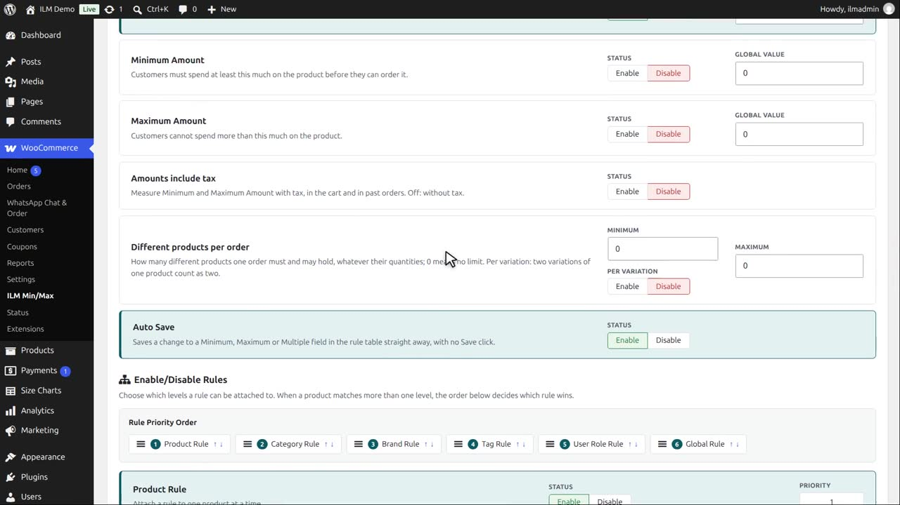
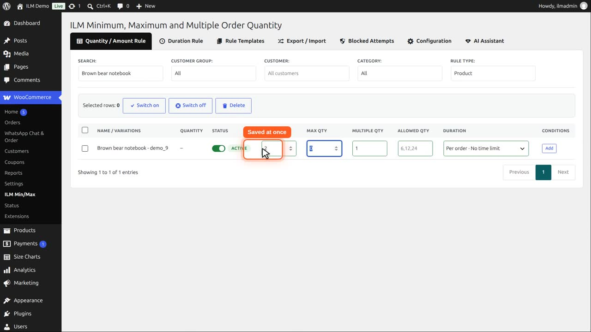
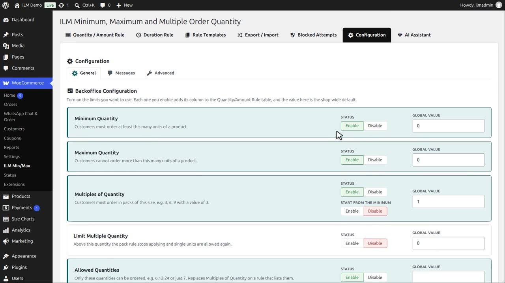
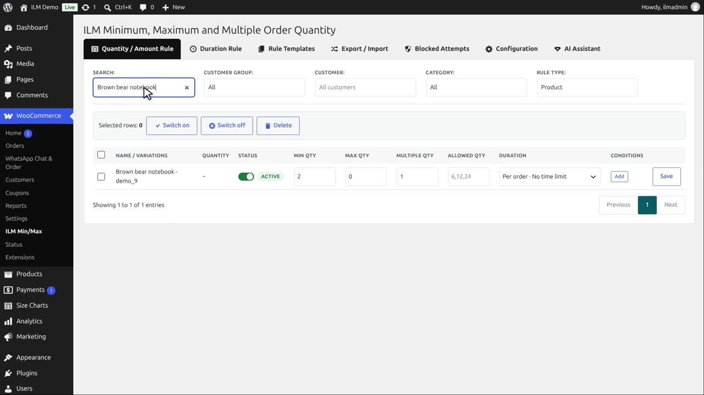
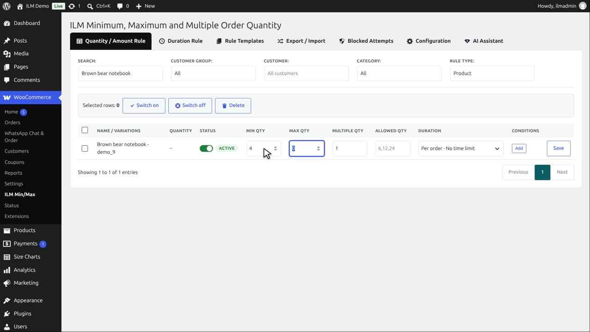

| Setting | What it does |
|---|---|
| Auto Save | Saves a change to any field in the rule table straight away, with no Save click. |
Auto Save is enabled after installation.

So when you change a value in the rule table and click away, it is saved at once. There is no Save button.

Now disable Auto Save.

The rule table now has a Save button on every row.

Changing a value no longer saves it. If you leave the page now, the change is lost.

Click Save to store the row. This is useful when you want to edit several values first, and save them together.